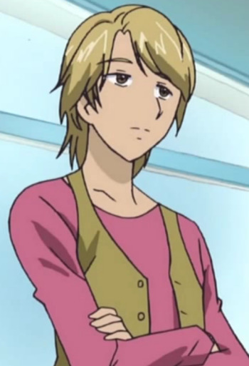

|  |
Nuts |
- Yes! Pretty Cure 5
- Yes! Pretty Cure 5 Movie: Great Miraculous Adventure of the Mirror Country!
- Yes! Pretty Cure 5 GoGo!
- Yes! Pretty Cure 5 GoGo!: Happy Birthday in the Sweet Kingdom
- Pretty Cure All Stars GoGo Dream Live!
- Pretty Cure All Stars Movie DX: Minna Tomodachi Kiseki no Zenin Daishuugou
- Pretty Cure All Stars Movie DX2: Kibou no Hikari Rainbow Jewel o Mamore
- Pretty Cure All Stars Movie DX3: Reach the Future! The Rainbow Flower that Connects the World
|